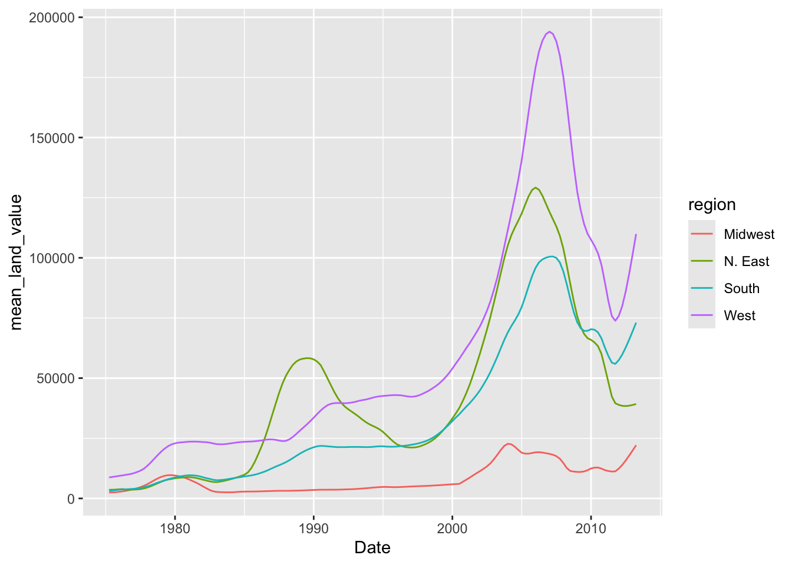
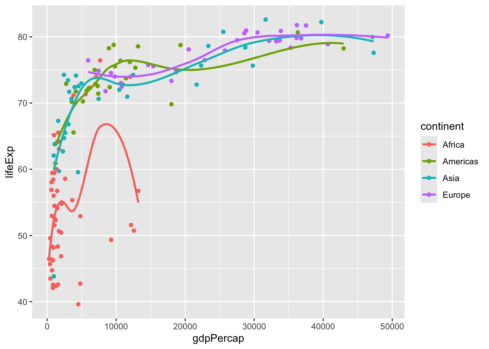
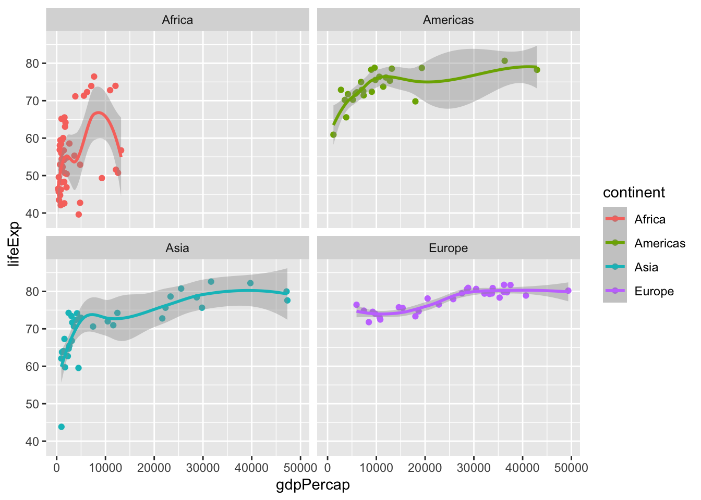
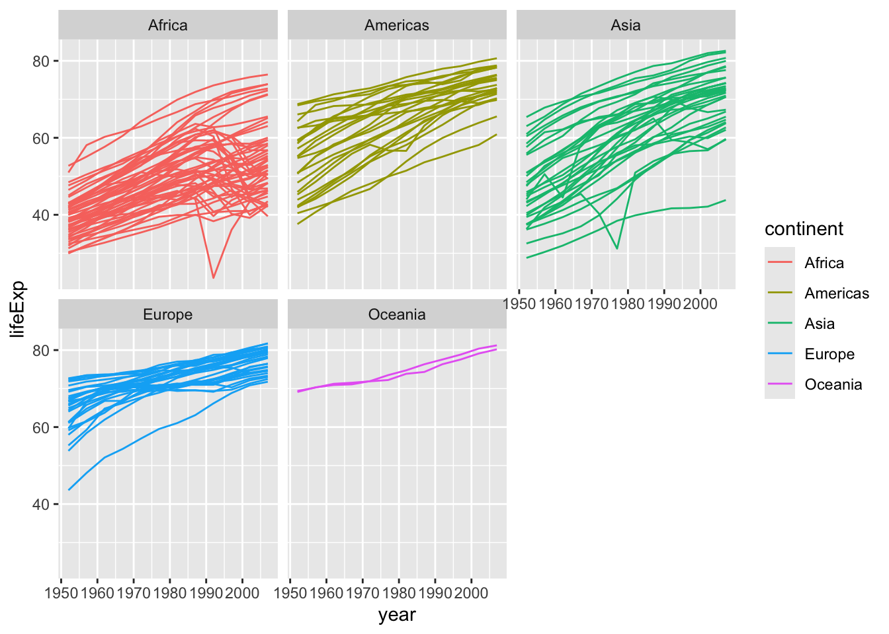
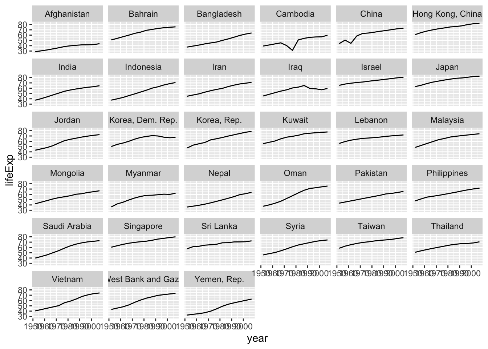

library(tidyverse)
library(knitr)
library(gapminder)Assignment_5
Assignment 5: Data transformation and visualization - Part 2
First, load all the required packages with the following code. Install them if they are not installed yet.
Exercise 1. Trends in land value
This excercise uses a dataset that describes the trends in land value (Land.Value), among other variables, in different states in the US 1975-2013. The states are grouped into four different regions, under the variable region. This dataset was obtained from the Data Science Services of Harvard University.
housing <- read_csv("https://raw.githubusercontent.com/nt246/NTRES-6100-data-science/master/datasets/landdata_states.csv")
housing |>
head() |>
kable() | State | region | Date | Home.Value | Structure.Cost | Land.Value | Land.Share..Pct. | Home.Price.Index | Land.Price.Index | Year | Qrtr |
|---|---|---|---|---|---|---|---|---|---|---|
| AK | West | 2010.25 | 224952 | 160599 | 64352 | 28.6 | 1.481 | 1.552 | 2010 | 1 |
| AK | West | 2010.50 | 225511 | 160252 | 65259 | 28.9 | 1.484 | 1.576 | 2010 | 2 |
| AK | West | 2009.75 | 225820 | 163791 | 62029 | 27.5 | 1.486 | 1.494 | 2009 | 3 |
| AK | West | 2010.00 | 224994 | 161787 | 63207 | 28.1 | 1.481 | 1.524 | 2009 | 4 |
| AK | West | 2008.00 | 234590 | 155400 | 79190 | 33.8 | 1.544 | 1.885 | 2007 | 4 |
| AK | West | 2008.25 | 233714 | 157458 | 76256 | 32.6 | 1.538 | 1.817 | 2008 | 1 |
1.1 Washington DC was not assigned to a region in this dataset. According to the United States Census Bureau, however, DC is part of the South region. Here:
- Change the region of DC to “South” (Hint: there are multiple ways to do this, but
mutate()andifelse()might be helpful)
housing |>
mutate(region = ifelse(is.na(region), "South", region))# A tibble: 7,803 × 11
State region Date Home.Value Structure.Cost Land.Value Land.Share..Pct.
<chr> <chr> <dbl> <dbl> <dbl> <dbl> <dbl>
1 AK West 2010. 224952 160599 64352 28.6
2 AK West 2010. 225511 160252 65259 28.9
3 AK West 2010. 225820 163791 62029 27.5
4 AK West 2010 224994 161787 63207 28.1
5 AK West 2008 234590 155400 79190 33.8
6 AK West 2008. 233714 157458 76256 32.6
7 AK West 2008. 232999 160092 72906 31.3
8 AK West 2009. 232164 162704 69460 29.9
9 AK West 2009 231039 164739 66299 28.7
10 AK West 2009. 229395 165424 63971 27.9
# ℹ 7,793 more rows
# ℹ 4 more variables: Home.Price.Index <dbl>, Land.Price.Index <dbl>,
# Year <dbl>, Qrtr <dbl>- Create a new tibble or regular dataframe consisting of this new updated
regionvariable along with the original variablesState,DateandLand.Value(and no others)
housing |>
mutate(region = ifelse(is.na(region), "South", region)) |>
select(region, State, Date, Land.Value)# A tibble: 7,803 × 4
region State Date Land.Value
<chr> <chr> <dbl> <dbl>
1 West AK 2010. 64352
2 West AK 2010. 65259
3 West AK 2010. 62029
4 West AK 2010 63207
5 West AK 2008 79190
6 West AK 2008. 76256
7 West AK 2008. 72906
8 West AK 2009. 69460
9 West AK 2009 66299
10 West AK 2009. 63971
# ℹ 7,793 more rows- Pull out the records from DC in this new data frame. How many records are there from DC? Show the first 6 lines.
housing |>
mutate(region = ifelse(is.na(region), "South", region)) |>
select(region, State, Date, Land.Value) |>
filter(State == "DC") |>
head(6) |>
kable()| region | State | Date | Land.Value |
|---|---|---|---|
| South | DC | 2003.00 | 290522 |
| South | DC | 2003.25 | 305673 |
| South | DC | 2003.50 | 323078 |
| South | DC | 2003.75 | 342010 |
| South | DC | 2004.00 | 361999 |
| South | DC | 2004.25 | 382792 |
Answer: 153
1.2 Generate a tibble/dataframe that summarizes the mean land value of each region at each time point and show its first 6 lines.
housing |>
mutate(region = ifelse(is.na(region), "South", region)) |>
group_by(Date, region) |>
summarize(mean_land_value = mean(Land.Value)) |>
select(region, Date, mean_land_value) |>
arrange(region, Date) |>
head(6) |>
kable()| region | Date | mean_land_value |
|---|---|---|
| Midwest | 1975.25 | 2452.167 |
| Midwest | 1975.50 | 2498.917 |
| Midwest | 1975.75 | 2608.167 |
| Midwest | 1976.00 | 2780.000 |
| Midwest | 1976.25 | 2967.333 |
| Midwest | 1976.50 | 3212.833 |
1.3 Using the tibble/dataframe from 1.2, plot the trend in mean land value of each region through time.
housing |>
mutate(region = ifelse(is.na(region), "South", region)) |>
group_by(Date, region) |>
summarize(mean_land_value = mean(Land.Value)) |>
ggplot() +
geom_line(aes(x = Date, y = mean_land_value, color = region))
Exercise 2. Life expectancy and GDP per capita 1952-2007
This exercise uses the gapminder dataset from the gapminder package. It describes the life expectancy (lifeExp), GDP per capita (gdpPercap), and population (pop) of 142 countries from 1952 to 2007. These countries can be grouped into 5 continents. As a reminder, reproduce the following plots exactly as shown.
gapminder |>
head() |>
kable()| country | continent | year | lifeExp | pop | gdpPercap |
|---|---|---|---|---|---|
| Afghanistan | Asia | 1952 | 28.801 | 8425333 | 779.4453 |
| Afghanistan | Asia | 1957 | 30.332 | 9240934 | 820.8530 |
| Afghanistan | Asia | 1962 | 31.997 | 10267083 | 853.1007 |
| Afghanistan | Asia | 1967 | 34.020 | 11537966 | 836.1971 |
| Afghanistan | Asia | 1972 | 36.088 | 13079460 | 739.9811 |
| Afghanistan | Asia | 1977 | 38.438 | 14880372 | 786.1134 |
2.1 Use a scatterplot to explore the relationship between per capita GDP (gdpPercap) and life expectancy (lifeExp) in the year 2007.
gapminder |>
filter(year == "2007") |>
ggplot() +
geom_point(aes(x = gdpPercap, y = lifeExp))
2.2 Add a smoothing line to the previous plot.
gapminder |>
filter(year == "2007") |>
ggplot(aes(x = gdpPercap, y = lifeExp)) +
geom_point() +
geom_smooth()
2.3 Exclude Oceania from the previous plot, show each continent in a different color, and fit a separate smoothing line to each continent to identify differences in this relationship between continents. Turn off the confidence intervals.
Note: only two Oceanian countries are included in this dataset, and geom_smooth() does not work with two data points, which is why they are excluded.
gapminder |>
filter(year == "2007", continent != "Oceania") |>
ggplot(aes(x = gdpPercap, y = lifeExp, color = continent)) +
geom_point() +
geom_smooth(se = FALSE)
2.4 Use faceting to solve the same problem. Include the confidence intervals in this plot.
gapminder |>
filter(year == "2007", continent != "Oceania") |>
ggplot(aes(x = gdpPercap, y = lifeExp, color = continent)) +
geom_point() +
geom_smooth() +
facet_wrap(~continent)
2.5 Explore the trend in life expectancy through time in each continent. Color by continent.
gapminder |>
ggplot(aes(x = year, y = lifeExp, color = continent)) +
geom_line(aes(group = country)) +
facet_wrap(~continent)
2.6 From the previous plot, we see some abnormal trends in Asia and Africa, where the the life expectancy in some countries sharply dropped at certain time periods. Here, we look into what happened in Asia in more detail. First, create a new dataset by filtering only the Asian countries. Show the first 6 lines of this filtered dataset.
gapminder_asia <- gapminder |>
filter(continent == "Asia")
gapminder_asia |>
head(6) |>
kable()| country | continent | year | lifeExp | pop | gdpPercap |
|---|---|---|---|---|---|
| Afghanistan | Asia | 1952 | 28.801 | 8425333 | 779.4453 |
| Afghanistan | Asia | 1957 | 30.332 | 9240934 | 820.8530 |
| Afghanistan | Asia | 1962 | 31.997 | 10267083 | 853.1007 |
| Afghanistan | Asia | 1967 | 34.020 | 11537966 | 836.1971 |
| Afghanistan | Asia | 1972 | 36.088 | 13079460 | 739.9811 |
| Afghanistan | Asia | 1977 | 38.438 | 14880372 | 786.1134 |
2.7 Using the filtered dataset, identify the countries that had abnormal trends in life expectancy by plotting, and discuss historical events possibly explaining these trends. (Hint: facet by country)
gapminder_asia |>
ggplot(aes(x = year, y = lifeExp)) +
geom_line() +
facet_wrap(~country)
Answer: China has a steep drop around 1960, possibly because of the mass famine. Cambodia also has a steep drop around 1975 to 1978, probably because of the mass genocide that happened in 1975, and the Cambodian-Vietnamese war that happened in 1978.